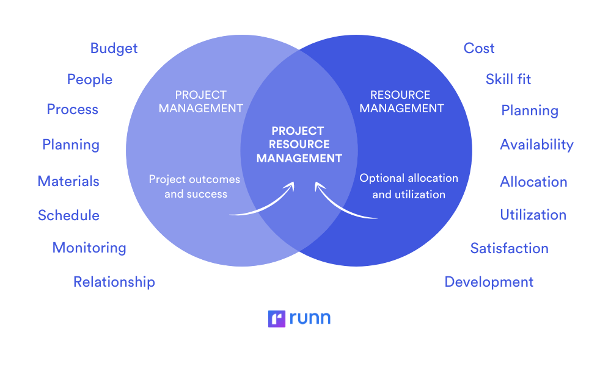
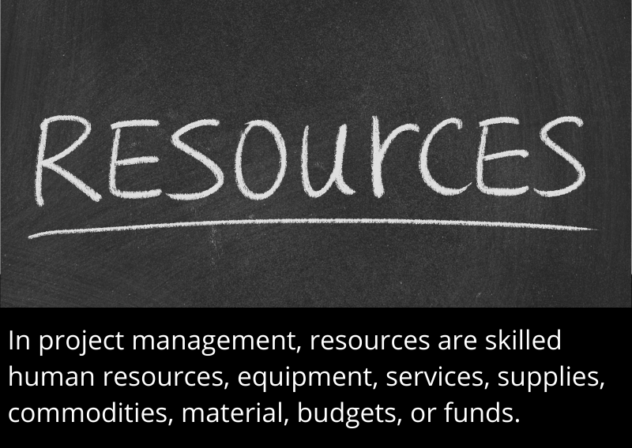

Project Resource Management - The Basics
By: Daniel Cisneros Siliezar
If you are a current or aspiring Agile project manager working in the sector of information technology, you are probably familiar with the topic of project resource management. You are also looking to enhance your knowledge and skills in being a better project manager that practices Agile methodologies. What does project resource management mean? How is it important in regards to the global state of the current and future workforce in information technology? These questions will be answered as the topic is defined and how it is important.
What are Resources?
Before further discussing project resource management, it is important to understand what resources are. Resources are needed assets that serve a main purpose of providing assistance to a specific task or goal within a project. A resource can be a person, team, tool, time, and monetary assets. A typical project requires various resources to meet the objectives within the project and even complete the project. As an Agile project manager, it is imperative that you assess and allocate resources before the project starts. If you were to not plan properly before the project, consequences will occur, such as using up all of your resources during the project or having to delay deadlines in completing the project.
What is the Definition of Project Resource Management
Enhancing your knowledge as a project manager is knowing the completion of subprocesses needed to ensure that the project manager is making the most efficient use of human and physical resources that are involved with the project. Human resource management includes a variety of people, such as stakeholders of the project, customers, team members, sponsors, support staff, and so forth. Physical resources are more along the lines of equipment, supplies, materials, and facilities needed to complete the deliverables or the final product of a project. Project resource management is subdivided into six steps:
- Planning resource management - This process covers how to acquire, estimate, oversee, and utilize resources within a project. By knowing this process, it is imperative to know its outputs, which include a resource management plan, project charter., and project documents updates
- Estimating activity resources - This process covers the estimation of resources both human and physical that are required to complete work within a project. The outputs of this process include resource requirements, a resource breakdown structure, basis of estimates, and project documents updates.
- Acquiring resources - This process involves the acquisition of resources such as team members, equipment, materials, and other resources that are necessary to complete the project. The outputs of this process include project team assignments, resource calendars, documents updates, and change requests.
- Developing the project team - This process covers the creation of strengthening group and individual skills to enhance performance within the project. Team collaboration skills are frequent challenges that project managers in Agile face. Outputs of this process include assessments of team performance, documents updates, and change requests.
- Managing the project team - This process covers overseeing the performance of team members on a project, as well as motivating them, providing important feedback, problem resolution, and coordinating changes to better performance within the project. Outputs of this process include project management plan updates, change requests, project documents updates, and organizational process assets updates.
- Controlling resources - This process involves the project manager ensuring that a project’s physical resources are available when needed, overseeing the actual versus planned resource management, and taking corrective actions as necessary. Outputs of this process include work performance information, project management plan updates, project documents updates, and change requests.
As you learn more about the processes of project resource management, you will become more knowledgeable and efficient as an Agile project manager. It is important to know what resources to use and use them effectively for the upcoming project that you were assigned.
Why is Project Resource Management Important?
People determine the failure or success of a business and their projects. One of the toughest challenges you will face as a project manager is managing human resources. Human resource management is a critical part of project resource management and it is imperative that you, a project manager, understand the problems within the workforce of IT and their involvement in the future.
It is highly imperative that organizations practice their philosophies in regards to human resources. If humans are truly critical and are the organization’s greatest asset, then organizations should seek to meet their human resource needs and the needs of individuals. Organizations must understand the importance of project resource management and make efficient use of their employees if they want to implement their information systems projects successfully.
Typically, organizations are aware of the importance of human resource necessities by improving their benefits, work hours and incentives, and hiring future employees. Most organizations have created their benefits and workplaces policies to be centered around the needs of the employee. Many employees know that the majority of their organizational benefits include flexible work hours, training on the job, furthering their education, and assistance for tuition payments.
All organizations should develop future skills and talent in regards to information technology. They will need employees that are capable of maintaining the systems, as well as innovate new technologies to make their work more efficient. The positive aspect of the new generation is how tech-literate we are. However, it is an entire new skill to create new systems and work within teams that span across the globe. As an Agile project manager, it is imperative that you can lead your team and manage how the resources of the project are utilized throughout its process.
Conclusion
As an agile project manager, you will face the challenge of agile project resource management. It is imperative to know its steps, as well as why it's related to agile project management in the information technology world. As a project manager, it is your job to oversee how human and physical resources are utilized throughout a given project. As you gain more knowledge about this topic, the more knowledge you gain in project management in general.
References
- What are resources?
- Information Technology Project Management book by Kathy Schwalbe 9th Edition